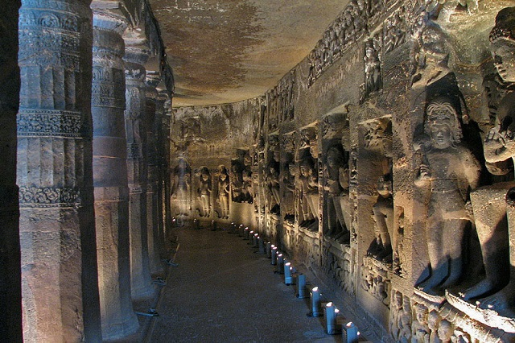

Maharashtra is India’s third largest and the second most visited tourist destination by foreign tourists. The vast, multi-faceted and sprawling state of Maharashtra can best be understood by browsing through Maharashtra Travel Guide. Having bustling cities like Mumbai, Pune, Aurangabad and some of the most awe-inspiring hill-stations like Mahabaleshwar and Matheran; Maharashtra is amongst India’s fastest growing and populous states of India.
It is located on the western coast of India; apart from gold-sand beaches like Aksa Beach, there are treasures like Marine Drive meant for rejuvenation. Bollywood film industry, which is gradually taking over the world of cinemas thrives here in Maharashtra.
And when it comes to religion, history and heritage; Ajanta & Ellora Caves, Shirdi, Haji Ali Dargah, and Mount Mary Church are endowed with profuse charm. Former rulers further adorned the state with their signature architecture and added cherry on the cake. This is evident in Gateway of India, Chhatrapati Shivaji Terminus, Pratapgad Fort and many others. Also, festivals like Ganesh Chaturthi, Ellora Festival and Banganga Festival give an insight of Maharashtrian culture.
Beaches, heritage, history, spirituality and festivals combine to cause a blooming scenario of tourism in Maharashtra. Indian Holiday presents a well-arrayed travel guide to Maharashtra so that you have nothing to fuss about.
------------ Popular Packages In Maharashtara ------------
Tour of The Dreamcity
₹ 3,999
Mumbai, formerly Bombay, is big. It’s full of dreamers and hard-labourers, starlets and gangsters, stray dogs and exotic birds, artists and servants, fisherfolk and crorepatis (millionaires), and lots and lots of people. It has India’s most prolific film industry "Bollywood"

Ajanta and Ellora Caves Tour
₹ 5,999
Superbly set in a remote river valley 105km northeast of Aurangabad, the remarkable cave temples of Ajanta are this region’s second World Heritage Site. Much older than Ellora, these secluded caves date from around the 2nd century BC to the 6th century AD and were among the earliest monastic institutions to be constructed in the country. Ironically, it was Ellora’s rise that brought about Ajanta’s downfall and historians believe the site was abandoned once the focus shifted to Ellora.
Mumbai Goa Tour
Indulge in a memorable vacation to Goa on the next string of holidays you come across on the calendar. The Mumbai to Goa packages will delight you with popular tourist attractions, sightseeing the pristine beaches, partying all night in Goan night clubs and rejuvenate the mind and body with a range of enthralling experience when you set on a holiday from Mumbai to Goa.
₹ 10,999
Shirdi With Aurangabad
Located in the district of Ahmednagar in Maharashtra, Shirdi is one of the most significant religious destinations in India. It is just 190 km from Pune and 240 km from Mumbai. The town is known for being the abode of Sai Baba, the great saint who passed away in the year 1918.
₹ 4,999
Best of Maharashtra
₹ 6,499
The state of Maharashtra is the Home of Sahydri Mountains, the state has many appealing hill stations. The Britishers founded most of these hill stations during their colonial era to beat the scorching heat. But the beauty and the charming glory are still alive in these hill stations. The Western Ghats, which form a part of the Sahydri range, has also lots of beautiful hill stations.
Wildlife of Maharashtra
₹ 9,999
Maharashtra state is home to many rare species of flora and fauna in 17 wildlife sanctuaries and national parks. Wildlife safari in important sanctuaries of Maharashtra inlcude Tadoba National Park, Sanjay Gandhi National Park,Pench National Park, Bharmragarh Sanctuary,Chaprala Wildlife Sanctuary,Bor Wildlife Sanctuary, Nagzira Wildlife Sanctuary,Radhanagari Wildlife Sanctuary, Karnala Bird Sanctuary and Bhigwan Bird Sanctuary.
Magical Mahabaleshwar Tour
₹ 3,499
The city of Mahabaleshwar is a pinnacle of greenery, boasting one of the only evergreen forests in the world. The landscape abounds with lush hills, valleys and lookout points such as Lodwick Point, Arthur's Seat and Babington Point, all of which offer spectacular views. Trot along on horseback for a delightful four-legged tour of the gorgeous Venna Lake area, and savour juicy native strawberries, mulberries and corn.
Escape to Saputara
₹ 3,999
Positioned on the Maharashtra- Gujarat border in Dang District in the beautiful state of Gujarat, Saputara is blessed with marvelous waterfalls, cool climate, snow capped mountains, magnificent gardens, scenic beauty and oodles of attractions that entice the tourists from various parts of the world. According to Hindu myths, Lord Rama had stayed for 11 years in the dense woods of Saputara.